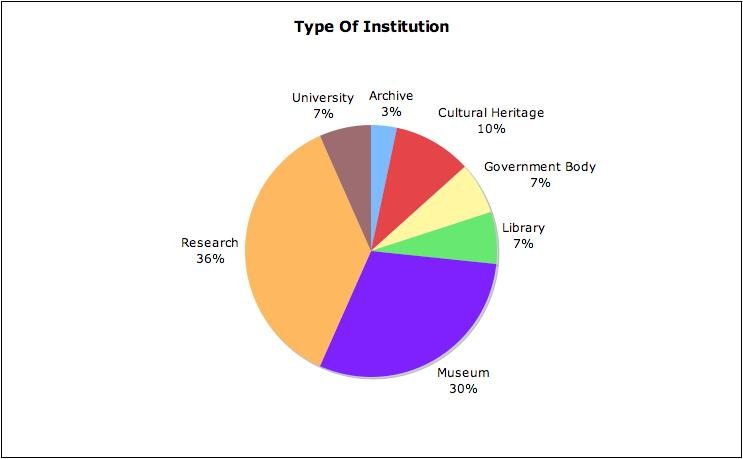
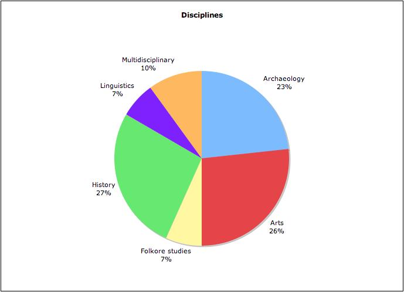
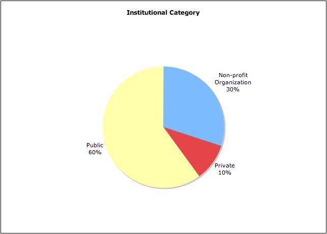
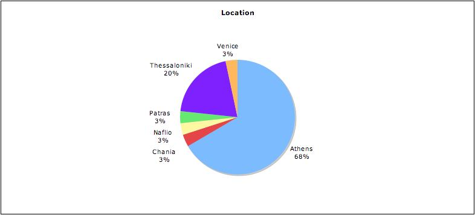
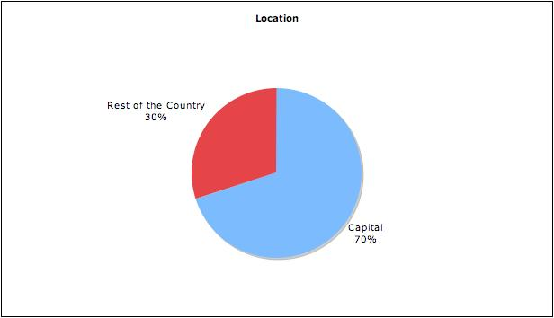

Appendix A: Key Greek DARIAH Stakeholders
The Ministry of Education, Lifelong Learning and Religious Affairs is the competent authority for the funding of universities and for the creation of new departments and nominations of personnel. A Special Secretary is responsible for the management of the Operational Programme for Education and Initial Vocational Training, that constitutes the main funding instrument for post-graduate studies and basic research in universities as well as technological research in Technological Education Institutes. Today, 21 Universities and 15 Technological Education Institutes are in operation and they are the main operators in the RTD area (close to 45% of the national effort). Universities are also among the main actors for defining research orientations and priorities.
The General Secretariat for Research and Technology (GSRT), a department of the Ministry of Education, Lifelong Learning and Religious Affairs, is the authority responsible for the formulation and implementation of RTD policy in Greece. The Secretariat's mission is to promote cooperation with other countries and international organizations on research and technology issues, establish new institutes and technological centres to support the development of the Greek economy. It is the funding agency for 21 of the country's research and technological centres. The dissemination of research and technology information throughout the country and internationally is implemented by advanced ΙΤ systems and networks.
The Ministry of Economy Competitiveness and Shipping (formerly Economy and Finance) plays a decisive role in policy making and funding, as they have the first role in innovation policy with the preparation of incentives for innovative RTD investments. It is the central managing authority of the Community Support Framework, the regional development and the social funds, and it coordinates the Operational Programmes of the other Ministries and Regional authorities in order to set the main priorities and avoid duplications.
The Special Secretariat for Competitiveness (SSC), has been established in 2000 and supervises the Managing Authority of the “Operational Programme for Competitiveness”. The Managing Authority, is involved in the decision making for programmes' planning and project funding and it can also take ad hoc decisions to support actions related to research and innovation. Moreover the SSC supports the National Competitiveness Council, created in 2003, to promote competitiveness and development. The aim of the National Council for Competitiveness and Development is to plan and monitor the implementation of the National Competitiveness and Development Strategy.
The Ministry of Culture and Tourism aims at the protection, preservation and promotion of cultural heritage, as well as the development of the arts in Greece. The administrative structure consists of three main general departments: Antiquities and Cultural Heritage, Museums and Restoration Construction Projects, and Contemporary Culture. Regarding the domain of the arts and humanities, research is applied through the departments of Antiquities and Cultural Heritage by special chronologically and thematically divided Directorates dependent Ephorates of antiquities, institutions and museums throughout Greece. The Department of Contemporary Culture includes the Directorates of Literature, Theater and Dance, Music, Visual Arts, Cinema and Audiovisual Media, Cultural Actions and also emphasizes promotion, maintenance and economic support.
The National Hellenic Research Foundation (NHRF) is a multidisciplinary Research Centre established by Royal Decree on 9th October 1958. Its purpose is the organization, finance and support of high-level research projects in the humanities and the natural sciences. The Humanities Institutes cover a wide spectrum of study and research fields in Greek history and culture with the following institutes: Institute for Greek and Roman Antiquity, Institute for Byzantine Research, Institute for Neohellenic Research. The Natural Sciences Institutes perform basic and applied research in cutting edge areas of science, such as health, pharmaceuticals, environment, biotechnology and new materials.
The National Documentation Centre (NDC) is the national institution for documentation, information and support on science research and technology issues. It is integrated with the National Hellenic Research Foundation (NHRF) and is supervised by the General Secretariat for Research and Technology. NDC's services aim at supporting the country's entire scientific and business community, universities, research centres, enterprises and public and private sector institutions. In the area of digital humanities, NDC operates the Science and Technology Digital Library, supports the automation and networking of libraries and develops state-of-the-art library tools. NDC's vision is to provide access to scientific knowledge for everyone, in order to promote research, innovation and competitiveness. Furthermore, it monitors international trends, develops collaborations and networks and participates in national and European projects. It is also involved in a wide range of actions: consultancy services, training seminars, organization of information days, workshops and conferences, online services. The financial resources of the Centre include funds from the Annual State Budget and the Public Investment Programme, as well as from competitive national, European programmes, networks and services to third parties.
The Academy of Athens has the legal status of a Legal Entity of Public Law and is supervised by the Ministry of Education, Lifelong Learning and Religious Affairs. The Academy is composed of three Sections: the Sciences, Humanities and Fine Arts, and Ethical and Political Sciences. The main mission of the Academy of Athens is to cultivate and foster Sciences, Humanities and Fine Arts, to conduct scientific research, and to provide consultation to the state in these areas. In the pursuit of these objectives, the Academy of Athens supports scientific research, participates in international scientific organizations, carries out publications, grants scholarships, and confers awards and honorary distinctions. Currently there are 13 Research Centres and 10 Research Offices in operation, all with specialized libraries, as well as a central Library named the "Ioannis Sykoutris Library". Research Centres focused on Humanities are: Research Centre for Modern Greek Dialects, Hellenic Folklore Research Centre, Hellenic Folklore Research Centre, Research Centre for Greek Philosophy, Research Centre for Antiquity, Research Centre for Byzantine and Post-Byzantine Art, Research Centre for Scientific Terms and Neologisms, Bureau of Modern Greek Art.
ATHENA Research & Innovation Centre for Information, Communication and Knowledge Technologies is a research and technology body, which was founded under the auspices of the Ministry of Development in 2001. Its mission is the development of scientific and technological research, implementation and exploitation of results in the sectors of information technology, knowledge, communication and automating production processes. Among its goals is the specialization and training of scientists and technicians in the aforementioned fields by organizing and funding research projects, postgraduate seminars, publications, seminars and conferences. It also provides special technical services, undertakes technical and economical studies and feasibility studies so that commercial exploitation of the results is ensured. Athena RC cooperates under various frameworks with universities and technical universities, research institutes and companies or participates in Scientific Committees, consortia etc. It is also eligible to found or to co-found companies which share the same goals as “Athena”. The following two institutes and one unit of Athena RC concern humanities: the Institute for Language and Speech Processing (ILSP), the Cultural and Educational Technology Institute – CETI and the Digital Curation Unit.
The Institute for Language and Speech Processing (ILSP)/ R.C. “Athena” was established under the auspices of the General Secretariat of Research and Technology of the Ministry of Development. The aim of ILSP / R.C. "Athena" is to be a centre of excellence in the areas of: Natural Language Processing, Speech processing, recognition and synthesis, music and sound processing, e-learning, distance learning for language, culture and music. ILSP / R.C. "Athena" develops technologies on the following axes: digital monolingual, multilingual and multimedia corpora and dictionaries, computational lexical databases, text processing and analysis for information retrieval and knowledge extraction, multimodal and multilingual information processing and retrieval, machine translation and translation aid tools, stand-alone and integrated voice recognition and text-to-speech systems, assistive technologies for disabled persons, digital curation and presentation of cultural content, multimedia e-learning platforms for language and music.
The Cultural and Education Technology Institute (C.E.T.I.) aims at the strengthening of research and technological activities and the application of new technologies to humanistic research, culture and education. The Institute concentrates its scientific activities on the application of information technology to the study of texts, analyses, study and registry of languages, works of art, monuments etc., the study of related material, particularly ceramics, paper and parchments, and the application of information technology to the areas education including distance learning and education-on-demand. It also conducts research programmes into the area of the application of new technologies to culture and education, and provides information technology support for scientific and developmental activities of the region by creating databases, electronic storage facilities, network connections etc. It trains scientists by conducting post graduate seminars and workshops and through various publications and presentations. The institute collaborates both within Greece and abroad with experts and organizations specializing on topics relevant to its activities, with the purpose of the advancement of its objectives, and if needed, subcontract them for research topics of special interest.
Digital Curation Unit (DCU) The newly established (2007) Digital Curation Unit (DCU) is a department of the Institute for the Management of Information Systems of the “Athena” Research centre. It is a partner of Preparing DARIAH and has created the MOPSEUS Digital Library service. Its mission focuses in conducting research, developing technologies and applications, providing services and training, and asserting a leading role in the area of digital curation nationwide. One of the aim of the Digital Curation Unit is to serve the needs of digital scholarship and digital cultural heritage by providing services and applications on web archiving, annotation systems, digital preservation, database curation and ontologies.
The Foundation for Research & Technology Hellas–FORTH The Foundation for Research and Technology - Hellas (FORTH), established in 1983, is one of the largest research centres in Greece. It functions under the supervision of the General Secretariat for Research and Technology of the Ministry of Education, Lifelong Learning and Religious Affairs and consists of seven Research Institutes. The research and technological directions of the Foundation cover major areas of scientific, social, and economic interest, such as: Computer Sciences, Molecular Biology, Lasers, Telecommunications, Medical Engineering, Microelectronics, Robotics, Biotechnology, Materials, Chemical and Biological Engineering, Applied and Computational Mathematics, Biomedical Technologies, Bioinformatics as well as Historical and Cultural Studies. Over the years, FORTH has become one of the top European research centres, thanks to its high impact research results and its valuable socioeconomic contribution. The Institute of Computer Science with the a specialized unit of Centre for Cultural Informatics and the Institute of Mediterranean Studies focus on arts and humanities disciplines.
The Centre for Cultural Informatics is part of the research units of the Foundation for Research and Technology, Hellas (FORTH). It aims to the support of the entire lifecycle of cultural information and documentation procedures fostering preservation, study and promotion of cultural heritage. The Centre is involved in knowledge representation, ontology engineering, database technology and web technology with expertise in archaeology, museum documentation and management, sites and monuments management, art conservation, archives and libraries, thesaurus and dictionary management. Furthermore it constitutes a competence centre for the CIDOC-CRM documentation standard, continuing its development and providing consultancy to implementers and researchers.
The Institute for Mediterranean Studies (IMS) also belongs to the research units of the Foundation for Research and Technology, Hellas (FORTH). The purpose of IMS is to support and invigorate research in the field of the human and social sciences, as well as to promote the application of advanced technologies in the field. The IMS possesses a fully equipped Laboratory of Geophysical-Satellite Remote Sensing (GIS) & Archaeo-environment, specialized in archaeological research. The Library of the Institute is focused on Turkish Studies and Art History. The Library collects archival material, as well as collections of Greek and foreign newspapers in digital form and microfilms. The objective of the IMS's research programmes is to study the geographical space, the history and culture of Greece and the other Mediterranean countries in various historical periods, from prehistory to modern times. The research projects of the Institute are organized along the following axes: Turkish Studies, History Studies, Art History, Theatre Studies and Musicology, The Laboratory of Geophysical-Satellite Remote Sensing & Archaeo-environment.
The Hellenic Institute of Marine Archaeology (HIMA) is a private non-profit organization, founded in 1973, and acts as the official consultant to the Greek State from 1976 (when the Department of Underwater Antiquities in the Greek Ministry of Culture was founded). It aims to organize and promote maritime archaeological research and Greece's maritime heritage. HIMA undertakes scientific research, independently, under the supervision or in cooperation with the Greek Ministry of Culture. Its multifaceted activities include surveys and excavations, conservation, training, publication and cooperative research projects with other institutions throughout Europe. It has over 100 members, with diverse academic credentials, all of whom work on a voluntary basis. HIMA receives support from private sponsors .
The Archaeological Society at Athens was founded on 1837 by a group of scholars and politicians long before the establishment of a state service to protect antiquities from looting and destruction. The Society's mission is to locate, excavate, re-erect and restore ancient Greek treasures. It receives support from members' subscriptions and voluntary donations. The Society also founded several large museums in Athens, which were later merged to form the National Archaeological Museum. Its major projects include the excavation of the Acropolis, the restoration of the Parthenon and excavations of the Theatre of Dionysos, the Odeion of Herod Atticus and the Tower of the Winds and, more recently, excavations in Macedonia and Thrace. As an independent learned society, the Archaeological Society is in a position to assist the State in its work of protecting, improving and studying Greek antiquities. An important part of the Society's work is its publications. Besides the periodicals, there is the series of books with the general title The Library of the Archaeological Society at Athens: these are monographs on archaeological subjects and reports on excavations, mostly those carried out by the Society.
Aegeus - Society of Aegean Prehistory was established on 1 March 2009. Its mission is to study, research and disseminate of prehistoric archaeology of the Aegean, the neighboring regions, as well as regions that are historically related to the Aegean Sea. Increasing public awareness of the prehistoric cultural heritage in the Aegean region, through the promotion and advancement of Aegean archaeology in close collaboration with the State and other authorities is among its principle tasks. It also intends to engage in multidisciplinary collaborations in Aegean archaeology, such as bioarchaeology, archaeobotany, zooarchaeology, geoarchaeology and to promote collaborations with other social sciences and humanities (such as philology, social anthropology, history, philosophy, etc.) by developing a technical and financial infrastructure.
Eurypylus for Greek and Roman Antiquity (http://portal.lib.uoa.gr) is a service provided by the Library of the National University of Athens. The purpose of Eurypylus is to provide via the web information on activities related to educational and research activities of universities on Ancient Greek and Latin language and literature, archeology, history, philosophy, theater, music, religion and related subjects. Eurypylus offers information on conferences, seminars, excavations, exhibitions held in Greece by academic institutions and scientific bodies.
e-scriptorum (http://e-scriptorum.blogspot.com) is a blog set up by a group of librarians, aiming at developing and providing digital tools and information for the management and digitization of archives and libraries. It also provides news and useful links on digital archives, databases, tools, standards and conferences.
To the above list we must add the following Universities with humanities departments, that might be considered as prospective stakeholders, as some of them are interested in conducting digital research and in adding digital humanities in their curricula.
School of History and Archaeology
School of Philosophy and Pedagogy
School of Visual and Applied Arts
Department of History and Ethnology
Department of Greek Literature
Department of Languages, Literature and Culture of Black Sea Countries
Department of Foreign Languages, Translation and Interpreting
Department of Archival and Library Sciences
Department of Audio and Visual Arts
Faculty of Philology
Faculty of Philosophy, Pedagogy and Psychology
Faculty of History and Archaeology
Faculty of Music Studies
Faculty of Theatre Studies
Faculty of Turkish and Modern Asian Studies
Faculty of Slavic Studies
Faculty of the Philosophy & History of Science
Department of Communication, Media and Culture
School of Social Sciences
Department of Social Anthropology and History
Department of Cultural Technology and Communication
Department of Mediterranean Studies
Linguistics of the South-East Mediterranean Area
Faculty of Philosophy
Department of History and Archaeology
Department of Philosophy and Social Studies
Philosophy, Education and Psychology
Department of Plastic Arts and Art Sciences
Department of Cultural Heritage Management and New Technologies
Faculty of Humanities and Culture Studies
Department of History, Archaeology and Cultural Resources Management
Humanities
Department of History Archaeology and Social Anthropology
Appendix B: Surveyed Organizations
The Directorate of the National Archive of Monuments of the Hellenic Ministry of Culture and Tourism is the authority responsible for the collection, indexing and study of archival material that relates to the historical monuments and archaeological sites in Greece. It oversees the administrative development and history of the Archaeological Service, coordinates the digitization procedures applied by the Regional Authorities of the Hellenic Ministry of Culture and Tourism. The Directorate is also responsible for maintaining the National Archive of Monuments, an electronic registry on immovable and movable monuments and for compiling the Ongoing Catalogue of Listed Archaeological Sites and Monuments of Greece, which lists the decrees for the conservation of monuments, archaeological sites and places of historical interest in the country.
The Directorate of museums, exhibitions & educational programmes of the Hellenic Ministry of Culture and Tourism is responsible for the coordination and supervision of the following Departments: Department of Public Archaeological Museums and Collections, Department of Non-Public Archaeological Museums and Collections, Antique Shops and prosecution of illegal trade in antiquities, Department of Exhibitions and Museological Research, Department of Educational Programmes and Communications, Department of Economic and Secretarial Support. Its responsibilities also include harmonizing the work and activities of the Regional and Special Regional Services and preparing and presenting issues before the Central Archaeological Council, the Central Modern Monuments Council and the Council of Museums.
The National Archaeological Museum is the largest museum in Greece. Its original purpose was to secure all the finds from the nineteenth-century excavations in and around Athens and it has been gradually enriched with finds from all over Greece. The Museum holds collections with more than 20,000 exhibits of Greek civilization from the beginnings of Prehistory to Late Antiquity, possesses a rich photographic archive and a library with many rare publications. There are also modern conservation laboratories for metal, pottery, stone and organic materials, a cast workshop, a photographic laboratory and a chemistry laboratory. The Museum functions as a research centre for scientists and scholars from around the world and participates in special educational and other programmes. The Museum functions as a Special Regional Service of the Ministry of Culture and its five permanent collections are administered autonomously.
The Byzantine and Christian Museum, is one of the national museums of the country and one of the major museums internationally on art and culture of the Byzantine and post-Byzantine periods. It has more than 25,000 items, organized into collections, which date from the 3rd to the 20th century, mainly from Greece, Asia Minor and the Balkans. The VCHM has launched a new interpretative approach to Byzantine culture, endowing the museum with a different role in today's society, by hosting contemporary collections, numerous innovative temporary exhibitions and educational programmes.
The National Museum of Contemporary Art (EMST) was founded in 1997 as a Legal Body of Private Law, of non-profit character, supervised and funded by the Ministry of Culture and Tourism. Among its basic aims are: the creation of collections of works of contemporary Hellenic and international art, the promotion and presentation of advanced and experimental artistic tendencies, the enhancement of the aesthetic and artistic cultivation of the audience and the development of scientific research on subjects of contemporary art history and theory. Its foundation fulfilled a long-felt need for the existence of an institution for contemporary international art in Athens. Within the framework of the educational policy of EMST educational programmes for school groups and families, children workshops, tour for adults and educators' seminars are realized, aiming at contributing to the discovery of and familiarization with contemporary art, Greek and international. Within its policy for the development for scientific research, the documentation of its collections and contemporary art in general, EMST creates the Artists' Archive. The aim of the Museum is to develop into a centre of digital documentation for contemporary art, within the context of the European programme 'Information Society'.
The Athens School of Fine Arts has evolved from a small nucleus established in 1837 known either as the Polytechnic or the School for the Arts, and in 1930 the school was established as an independent institution. The goals of the Athens School of Fine Arts are to provide theoretical and practical education in the fine arts and promote contemporary art, to encourage the artistic sensibility of the public by organizing exhibitions of Greek and foreign artists and to train art education teachers for secondary schools. The Department of Theory and History of Art intends to upgrade the quality of Humanities in Greece through research and teaching of art history. The School's Library is instrumental in assisting the School to develop research in the history of art, with emphasis on modern Greek art. Its digital collection includes books, magazines and online databases.
The Athens University Museum of the National and Kapodistrian University of Athens is located in the historical building of "Cleanthis Residence", also known as "The Old University" where the first University of the Greek Independent State operated during the period between 1837 and 1841. The Museum's collections include hand-written books, old and rare editions, portraits of University’s professors, manuscripts, letters, diplomas, old scientific instruments of Medicine, Physics, Chemistry and Pharmacology, medallions and various souvenirs of the University. Museum’s Collections of Books includes the first Greek scientific editions of Law, Physics, Medicine, Chemistry, Astronomy, History, Philosophy, Archaeology and Linguistics, as well as works of the first Professors of the University of Athens. Additionally, the collections consist of old and rare editions, writings of the neo-Hellenic Enlightenment era, rare anatomic maps and scientific yearbooks.
The University of Piraeus Library's purpose is to support the educational - academic and research procedures, at both undergraduate and postgraduate course levels. The intermediate aims of the Library are: to connect and develop collaborations with other libraries and other national and international organizations to improve source exploitation; to train the library's staff in the new advances in librarianship, as well as informatics and computer science and also technologies that support the previous; to promote scholarship on the national and international standards, as well as compatible systems of organizing and administration in order to facilitate collaborations with other national and foreign libraries.
The Library and Information Centre functions as an independent and decentralized service of the University of Patras. LIC is an open access library and offers documented information and material to all users. Acquisition of materials is based on the teaching subjects and needs of the University. LIC maintains collections of general informative material (encyclopedias, dictionaries and handbooks), monographs and journals. It also offers access to a number of databases (text and multimedia) either online or in CD ROM and collections of electronic journals and electronic books. It also maintains smaller collections of material in various formats such as disks, cassettes, music CDs, video films, microfiches and other types. LIC emphasizes in the adoption of methods and practices in quality control, and in research and their incorporation in the daily operation.
The Centre for Greek and Roman Antiquity (KERA) is the youngest of the National Hellenic Research Foundation's (NHRF) three historical institutes. It was founded in 1979 in order to foster systematic research on antiquity. The Centre's research projects today cover all aspects of Greek antiquity, from prehistory to the end of antiquity in the seventh century A.D. Special emphasis is placed on the regeneration and renewal of the infrastructure of classical studies through the systematic collection and editing in computerized databases of source materials, including literary texts, inscriptions and coins, photographs, plans, maps, aerial photographs and topographical diagrams. Equally important is the publication of these materials in collections ('corpora'), the production of monographs, articles and other studies based on the data collected. The training of young scholars and the development of collaborative research programmes with Greek and foreign scholars, foundations and organizations is highly promoted through scholarly exchanges and the organization of conferences. The European Union has also funded the progressive establishment of a computer network and the production of programmes, which have facilitated the transfer of archives into electronic format, and the application of technology to the Institute's research and publishing activities. The KERA also possesses a small specialist library, which concentrates on areas covered by current research programmes.
The Research Centre for Byzantine and Post-Byzantine Art is one of the Research Institutes of the Academy of Athens. It is the brainchild of the byzantinist Manolis Chatzidakis, who held the Chair of Byzantine Archaeology and Art at the Academy of Athens from 1990 until 1998. The Centre was founded in 1994. Its mission is to carry out research on the history of Byzantine and Post-Byzantine Art, focusing on the architectural and painted monuments, as well as all other works of art of the era.
The Research Centre for the Study of Modern Greek History was founded in 1945 with the mission to collect, study and publish sources related to the history of Greece and the Greek Diaspora world since the 19th century. It also conducts research projects and publications. The Centre has acquired a collection of original documents and of microfilms and a specialised library. The Centre has acquired a collection of approximately 12.000 microfilms and its Library comprises 12.100 titles. The main bulk of the material consists of the correspondence of the British, French, Austro- Hungarian and American Foreign Ministries with their Embassies and Consulates in Greece and in the Ottoman Empire. Many research projects involve processing of evidence. Such projects are the historical bibliography and the presentation of large archival units in the form of either of a published catalogue or of an electronic database.
The Research Centre for Modern Greek Dialects (ILNE) came under the jurisdiction of the Academy of Athens in 1927 by Presidential Decree. The Historical Dictionary of Modern Greek, both in its standard form and in its dialectal varieties has a monumental objective: the comprehensive collection of all lexical/functional items of Modern Greek (mainly spoken language) and of their regional variants from 1800 onwards. It is called historical because it examines the phonetic, morphological, semantic and syntactic changes of Modern Greek words diachronically. The Centre is supervised by a Committee, composed of members of the Academy of Athens. In addition, the Archive of Toponyms and Personal Names has been attached to the Centre.
The Greek Language Centre has been operating since 1994 as a private entity based in Thessaloniki. The research institute is supervised and financed by the Ministry of Education, Lifelong Learning and Religion that shares the administration with the Ministry of Foreign Affairs and the Ministry of Culture. It aims at the scientific description and documentation of trends in Modern Greek language at home and abroad. The mission is described as the research of the Greek language and literature, the investigation of language education and policy, the certification of attainment in Greek, research and teaching materials and promotion and dissemination of Greek language.
The Institute for Balkan Studies (IMXA) was founded in March 1953, and operated as an offshoot of the Society for Macedonian Studies for the next twenty years. Since 1974, it has been an independent legal entity governed by private law, under the aegis of the Ministry of Culture. Its activities include: conducting research into the history, archaeology, culture, international relations, economics, and other aspects of the Balkan Peninsula, publishing scholarly studies and periodicals, organising conferences and other academic meetings, teaching the Balkan languages, Russian and Polish and running Greek summer courses for speakers of other languages. IMXA's main concerns are to promote a better understanding of the developments which have shaped the current situation in southeastern Europe and to work with the international and Balkan scholarly community.
The Society for Macedonian Studies is a legal entity of private law. Its objectives are to collect, record, classify, preserve, study, and publish linguistic, folklore, historical, archaeological, and general archival material and folk art which relate to Macedonia in particular and Greece in general. The Society has endeavored to promote and foster scientific research in all fields of study. In the furtherance of its aims, the Society has established three research departments (for history, linguistics, and archaeology), a library of some 45.000 volumes and a Gallery of Modern Greek Art.
The European Centre for Byzantine and Post-Byzantine Monuments was established as a legal entity of Private Law, supervised by the Ministry of Culture, based in Thessaloniki. Among its responsibilities in accordance with its aims are: to promote European and international level scholarly research in the fields of museology, excavation, restoration, preservation, promotion and the study of Byzantine and Post-Byzantine sites and projects. In this respect it conducts seminars and courses, provides grants to carry out research, it is involved in national or international programmes of scientific research and technological development and it participates in scientific activities.
The Hellenic Institute of Byzantine and Post-Byzantine Studies in Venice is Greece’s only research centre outside Greece itself. The Institute was founded in 1951, following a cultural agreement between Italy and Greece signed in 1948. The Institute began to function in 1958. The Institute’s main objectives are to carry out studies in Byzantine and Post-Byzantine history — focusing primarily on the history of Greek territories under Latin domination, on the basis of Italian and in particular Venetian archives — and to publish the relevant historical sources. Research in archives and libraries is carried out by Greek graduates, who receive a scholarship in order to prepare doctoral theses and other studies on topics in the history, art and literature of the Greek regions under Venetian rule, and also on aspects of the history and activities of the Greek Confraternity in Venice.
The Institute for Research on Music and Acoustics (IEMA) -Greek Music Documentation Centre is a non-profit, non-government organization aiming to develop and support research in the field of music and acoustics, support contemporary music creation and provide systematic information, documentation and education in these domains. Founded in 1989, the Institute is the result of a common initiative from musicians and musicologists who created this organization according to those found abroad. During the last years, IEMA has established a permanent cooperative relationship with the Greek ministries of Culture, Education and Research. It is a member of the National Music Network, and is currently the most active organization involved in music research, information and documentation within Greece. The Institute’s main pursuit is the scientific research and implementation via the use of new methods and technology, documentation and information provision through a series of actions (publications, sound recordings, concerts), and educational activities.
The National Research Foundation “Eleftherios K. Venizelos” was established as a centre for research and study of the work and the era of Eleftherios Venizelos, in Chania, the hometown of the greatest Greek statesman of the 20th century. The mission of the Foundation is to define a national strategy for the systematic research and study of the era, work and life of Eleftherios Venizelos. In order to achieve its goals, the Foundation aims at: creating an archive by collecting original material for the reproduction of archives of public and private, Greek and foreign collections, establishing a specialized library and a collection of documents. It also conducts research programmes and coordinated research projects, carrying out research infrastructure programmes and collaborating with universities and other Greek or foreign research institutes.
The Konstantinos K. Mitsotakis Foundation was established in April 2001 as a non-profit cultural organization and is supervised by the Ministries of Finance and Culture. It is designed primarily to promote research of the political, social and economic history of Greece, especially for the period since the 1940s. More specifically it aims at promoting the systematic study and research of the life and work of former Greek politicians and intellectuals. To achieve these goals the Foundation maintains the archive of Constantine Mitsotakis, which contains various types of documents, audiovisual material (photographs, video and sound recordings). Almost the entire collection has been digitized and indexed and is available online to researchers and scholars of modern political history. The foundation also holds a library, which includes publications in the fields of Political Science, History, International Relations and Economics.
The Folklife & Ethnological Museum of Macedonia–Thrace explores the traditional culture of recent times in the region of Northern Greece. It gathers, preserves and records the material evidence of that past, making it available to the public for purposes of research, education and entertainment. The Museum’s collections comprise some 20,000 items of all kinds - associated with agriculture, livestock breeding, fishing, as well as crafts such as weaving, sewing, embroidery, metalwork, carpentry and ceramics. Through knowledge of the society of yesterday the Museum hopes to promote a better understanding today's world. Its role is first and foremost a social one. Through its varied activities (exhibitions, educational programmes, publications and other activities) it communicates with the public and participates in the culture and life of the community.
The Folklore Museum Nafplion, belongs to the Peloponnesian Folklore Foundation, established in 1974 under the name «Vassilios Papantoniou», to study, search, rescue, and promote the wealth of Greek folk culture. Over 25,000 exhibits are hosted, with rare collections of costumes, embroidery, weaving, traditional pottery and a rich library.
The Averoff Museum of Neohellenic Art has operated in Metsovo, district of Ioannina, since August 1988. Its permanent exhibition comprises representative works by the major Greek painters, printmakers and sculptors of the 19th and 20th century, such as Gyzis, Lytras, Volanakis, Iakovides, Parthenis, Maleas, Galanis, Hadjikyriakos-Ghikas, Moralis, Tetsis, and many others. The museum’s Collection is regarded as one of the most complete and important of this period. In addition to the Permanent Exhibition, the museum mounts temporary thematic, retrospective, group, and other special-interest exhibitions with art works selected from other museums and private collections in Greece and abroad. Its other events include scientific symposiums, meetings, tours, educational programmes, and creative workshops.
The Greek Film Centre is a corporation that belongs to the broader public sector, is supervised by the Ministry of Culture and is subsidized by the state. The organization's goals are: «the protection, support and development of the art of film in Greece» and «the promotion, dissemination and promotion of Greek film productions both domestically and internationally.» To achieve its goals the Greek Film Centre develops the following activities: It finances film productions and ensures advantageous conditions in which Greek filmmakers can complete their work, it promotes and supports film distribution both domestically and internationally in commercial and parallel circuits, it organizes retrospectives and film weeks abroad, it participates in festivals, organizes seminars aimed at providing professional training, announces and awards scholarships for studies in Greece and abroad and it conducts studies and research as well as issues publications on the history and problems of Greek cinema.
The Thessaloniki Museum of Photography was established in 1997 and is the only photography museum in Greece. Its goals include organizing exhibitions and publications, supporting historical research and criticism on the subject of Greek photography, creating an updated library with titles and documents of Greek and international photographic literature, as well as enriching its collection with donations and purchases of historical and contemporary photographic works by Greek and foreign photographers. Its goals also include the hosting of lectures and the creation of educational programmes aimed at endowing the Greek audience with photographic learning. Particular emphasis is laid on the curation of original exhibitions and publications that study and promote aspects of contemporary Greek photographic artwork.
The Piraeus Bank Group Cultural Foundation (PIOP) carries out cultural activities, which are part of the Piraeus Bank Group's corporate social responsibility. It is a non-profit institution and is governed by a seven-member Board of Trustees. In accordance with the Foundation's statutes, the Piraeus Bank covers its operating costs, and also provides funds for an important part of its work. At the same time, the PIOP co-operates with local authorities and Greece's regional administrations towards creating thematic museums and relies on European funding for certain projects. The Foundation's headquarters are situated in the historical centre of Athens, in Plaka, where additionally are housed the Historical Archives Department, Publications, Research and Promotion Departments, as well as the Foundation's Library.
The Foundation of the Hellenic World (FHW), was founded and funded by the family of Lazaros Efraimoglou; it is therefore a privately funded non-profit cultural institution based in Athens. Its foundation was ratified in 1993 by unanimous vote of the Hellenic Parliament. The FHW's mission is to preserve Hellenic history and tradition, to foster awareness of the universal dimension of Hellenism and to contribute to general cultural evolution. The Foundation has created web sites of historical content and a laboratory of three-dimensional reconstructions. The organization holds conferences, seminars, film projections, production of printed publications, as well as visual and sound recordings through the use of state-of-the-art technology, of scientific or educational content. A significant aim is the management of historical and cultural information through research and collection of documentation material, the operation of a Digital Library and the maintenance of a Genealogy Department.
The Nordic Library is a joint venture by the four archaeological institutes of Sweden (working in Greece since 1948), Finland (1984), Norway (1989), and Denmark (1992). The Library contains 40.000 volumes mainly in the field of Greek archaeology and of ancient Greek religion and history, including 450 periodicals. The Library mainly caters towards Nordic scholars but also welcomes both Greek and foreign scholars who are members of the various research institutions and archaeological schools of Greece.
The Glinos Foundation belongs to Professor Andreas Glinos, son of the famous educator and philosopher Dimitris Glinos. In March 1990 the Glinos Foundation was officially established as a non-profit institution. It aims primarily at the preservation and study of the archival collection and the published works of Dimitris Glinos.
Appendix C: Participant Categorization
The following charts are a graphic representation of the breakdown of the surveyed institutions by type, discipline, category and location.





Appendix D: Survey Questionnaire
=============================================
Current Status & Assessment
=============================================
12. Please give a brief description of your organization’s policy and
targets in relation to modernization of research activities.
____________________________________________
____________________________________________
____________________________________________
13. Is there in your view a coherent national strategy within regard
to the development and encouragement of digital research in the
humanities?
( ) Yes ( ) No ( ) I don't know
14. Which do you think are the main obstacles for the implementation
of a national digital infrastructure that would serve the arts and
humanities? (You can select more than one options.)
( ) Absence of governmental policy
( ) Limited funding sources
( ) Researchers' disinterest
( ) Researches' reluctance
( ) Lack of education and training
( ) Other
15. How would you rate Greece as compared to other European countries
with respect to digital research organization and implementation in
the arts & humanities?
Perfect Very good Good Moderate Insufficient Absent
Greece _____ _____ _____ _____ _____ _____
Europe _____ _____ _____ _____ _____ _____
(Netherlands,
Denmark,
France,
Ireland)
16. What is the level of preparation of your organization for
supporting researchers' digital methodology?
( ) None
( ) Elementary
( ) Adequate
( ) Satisfactory
=============================================
DARIAH Participation Perspective
=============================================
17. Have you participated or are you currently participating in a
digitization project?
( ) Yes ( ) No
18. Are these projects internet accessible? If yes, please provide the
addresses (urls). (If the question does not apply, you may skip this
question.)
( ) No
( ) Yes 1.
( ) Yes 2.
( ) Yes 3.
( ) More than 3 urls
19. Which is the main funding source for your research projects?
Funding source _____
20. Does your organization have a service dedicated to the support of
users' needs in digital research?
( ) Yes ( ) No
21. Would you like to participate in the DARIAH initiative in one or
more of the following ways? (If yes, please select one or more
options.)
( ) Content providing
( ) Digital curation
( ) Research methodology
( ) Tools for digital research
( ) Participation in user requirements plan
( ) Not interested
( ) Other
22. We welcome your thoughts and/ or comments with respect to this
questionnaire-survey.
____________________________________________
____________________________________________
=============================================
23. If you care to receive information on the results of this survey,
please let us know.
( ) Yes ( ) No
Appendix E: References
On-line Questionnaire Tool
The Greek Innovation System
http://www.gsrt.gr/default.asp?V_ITEM_ID=5990
The ERAWATCH Report – An analysis of policy
Economic Data & Reports. National Strategic Reference Framework for 2007-13
http://www.mnec.gr/en/economics/National_Strategic_Reference_Framework_for_2007-13/
Operational Programme ‘IS/Action Lines /Projects:Documentation, management, promotion of Greek cultural heritage
http://www.infosoc.gr/infosoc/enUK/epktp/priority_actions/paideiapolitismos/erga/erga_1_3.htm
National Council for Research and Technology
http://www.eset.certh.gr/active.aspx?mode=el.
Ministry of Culture and Tourism - YP.PO. and Digital Actions.”
Institution of Excellence" and Digital Culture Creation
http://www.infosoc.gr/infosoc/el-GR/specialreports/digital_culture/default.htm.
“Competitive Greece”
http://www.competitive-greece.gr/
“Cultural and Educational Technology Institute.”
“Digital Strategy 2006-2013.”
http://www.infosoc.gr/infosoc/en-UK/sthnellada/committee/default1/top.htm.
“Documentation, management, promotion of Greek cultural heritage.”
“ESET - 7th EU Framework Programme”
http://www.eset.certh.gr/active.aspx?mode=el
“i2010 - Lisbon Strategy.”
http://ec.europa.eu/information_society/eeurope/i2010/ict_and_lisbon/index_en.htm.
Nikos Maroulis. “ERAWATCH Country Report 2009.” ERAWATCH.
http://cordis.europa.eu/erawatch/index.cfmfuseaction=search.resultList&hashCode=5C748BC4AE0DBEAC05ECCDE370A9C71A#@page=1@perPage=10@sortBy=res_country@sortOrder=asc@filter=K3NvcnRfdHlwZTooIklOVF9TRVJWSUNFIikgK3Jlc190b3BpYzooIklOVF9DT1VOVFJZUkVQX0FOQUxZVElDXzA5Iik=.
“Operational Programme 'Information Society' - Annual Report.”
http://www.infosoc.gr/infosoc/en-UK/epktp/Parakoloythish_ajiologish/EthsiaEktheshEkteleshs/.
“Operational Programme Culture 2000-2006.”
http://www.hellaskps.gr/Details2_en.asp?L1=8&L2=1&L3=1&L4=1&L5=8.
“RESEARCH - Socio-economic Sciences and Humanities.”
http://ec.europa.eu/research/social-sciences/newsletter/issue5/article_3994_en.htm.
CORDIS: Greek Research and Innovation.
http://cordis.europa.eu/greece/links.htm.